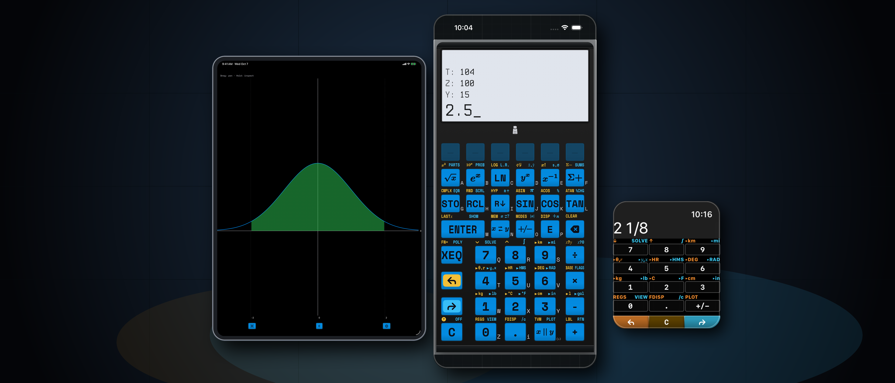
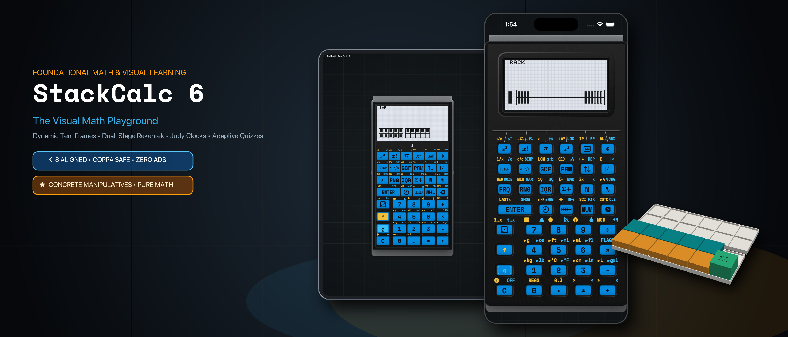
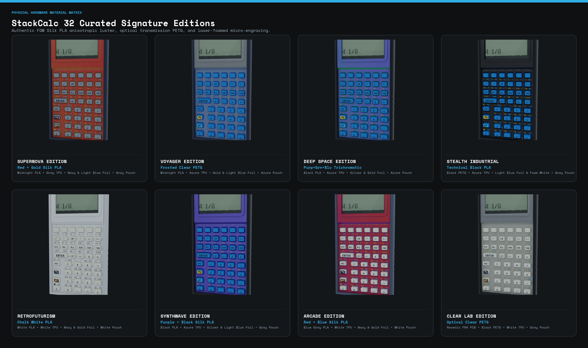

Press Kit & Editorial Overview
StackCalc Calculator is a tactile, deterministic scientific RPN calculator and visual K–8 math companion for iPhone, iPad, and a 100% standalone Apple Watch app.
Rather than treating mobile math as another flat, soulless grid of glass—or hiding reasoning inside a black-box AI—StackCalc restores the physical joy, speed, and transparent step-by-step clarity of a dedicated mathematical instrument across one unified app with two built-in modes that grow with the learner from first grade through professional engineering.
1. At-a-Glance Editorial Fact Sheet
| Attribute | Details |
|---|---|
| App Store Name | StackCalc Calculator (Subtitle: Scientific, Graphing & Solver) |
| Apple App ID | 6801788040 (apps.apple.com/app/id6801788040) |
| Version 1.1 Milestone | Unifies Scientific Mode (StackCalc 32) and Visual Learning Mode (StackCalc 6) in a single universal app |
| Supported Platforms | iOS (iPhone), iPadOS (iPad), watchOS (100% Standalone Apple Watch App) |
| Instant Mode Deep Link | Open stackcalc://sc6 on any iPhone or iPad to launch directly into Visual Learning Mode (StackCalc 6) |
| Business Model & Ethics | 100% Offline • Zero Ads • Zero Tracking • Zero Subscriptions • COPPA & FERPA Safe |
| Open Education Ecosystem | Free downloadable 43-page K–12 Teacher Curriculum Guide & open-source 3D-printable Gridfinity classroom blocks (stackcalc.io/education) |
2. The Design Philosophy: Bridging Classroom Intuition and Engineering Precision
Traditional math tools force learners through three disconnected worlds: children begin with physical classroom blocks, transition to algebraic school calculators cluttered with nested parentheses and syntax errors, and only encounter clean stack-based computation (Reverse Polish Notation) in university or professional engineering—often on discontinued vintage hardware like the HP-32SII or $250+ boutique collectors' calculators.
StackCalc was created to unify that journey in a single, accessible instrument:
- End Parenthesis Anxiety: By keeping active numbers visible on a clean vertical stack, users operate on numbers in the exact order they think—eliminating bracket mismatches and hidden state.
- Connect Physical and Digital Learning: Elementary students see numbers transform directly into visual models on screen alongside free, open-source 3D-printable classroom blocks, building spatial number sense before graduating to full scientific and calculus workflows.
- Built for Everyday Use & Exam Integrity: Free of programming modes, CAS engines, QWERTY keyboards, ads, or subscriptions—delivering pure, distraction-free mathematical utility across iPhone, iPad, and Apple Watch.
3. One Unified App, Two Built-In Modes
StackCalc is a single universal app that adapts to the user's stage of learning through two purpose-built modes:
Mode A: Scientific Mode (StackCalc 32) — The Modern HP-32SII Reimagined

Designed for engineers, scientists, AP students, and anyone who values speed and transparency over black-box answers:
- Zero Parentheses, Visible 4-Level Stack (
X, Y, Z, T): Enter numbers, tap operations, and watch intermediate results stay visible at every step. You never lose your place or battle syntax errors. - Exact Mixed Fractions (
SIMP): Natural mixed-fraction entry and display (e.g.,2 1/8) with dedicated step-by-step prime factor reduction so students and builders see how fractions simplify. - Multi-Variable Equation Solver & Calculus: Store custom formulas, solve numerically for any unknown variable, and evaluate definite integrals using Simpson convergence.
- Interactive Curve Plotting: High-contrast graphing canvas with real-time root inspection, inflection tracing, and shaded area-under-the-curve integration.
- STEM & Computer Science Toolkit: Complex numbers, 2-variable statistical regressions, and Base-N programmer modes (
HEX,DEC,OCT,BIN).
60fps App Preview Walkthroughs (Normal Distribution Integration & Z-Score)
iPhone Walkthrough (30s)
iPad Benchtop Walkthrough (30s)
Mode B: Visual Learning Mode (StackCalc 6 — New in Version 1.1)

In Version 1.1, switching into Visual Learning Mode (StackCalc 6) transforms the calculator into a distraction-free K–8 educational playground aligned with Singapore Math (Concrete • Pictorial • Abstract) and Common Core:
- Live Pictorial LCD Visualizations: As students enter numbers and perform operations on a focused 2-level stack, the dot-matrix display dynamically renders quantities as:
- Ten-Frames (
10F): Subitizing and make-ten bridging strategies up to 100. - 20-Bead Number Rack (
RACK): Classic 5-and-5 Rekenrek bead grouping for doubles and near-doubles fluency. - Dynamic Number Line (
LINE): Proportional jump arcs illustrating addition and subtraction trajectories. - Analog Judy Clock (
🕒): Synchronized hour, minute, and ticking second hands with elapsed time conversion. - Ratio, Stats & Frequency Tables: Side-by-side tabular inspection for elementary data literacy.
- 5-Level Adaptive Fluency Quiz Engine (
?): Generates targeted mental math challenges (L1–L5) that adapt to student response speed and accuracy, complete with live score tracking and celebratory mastery banners.
Paired with Open-Source 3D-Printable Classroom Blocks & 43-Page Curriculum
To bridge the screen with hands-on classroom learning, we designed the StackCalc Learning Lab—a modular ecosystem of open-source 3D-printable Gridfinity manipulatives and a 43-page Teacher Curriculum Guide (PDF) mapped lesson-by-lesson to Singapore Dimensions Math, Bridges in Mathematics, and Big Ideas Math:

Modular Gridfinity Dock: The storage box becomes the student desk workstation.

Ten-Frame Stage: Mirrors the on-screen Ten-Frame display for Kindergarten & Grade 1.

20-Bead Number Rack: Tactile 5-grouping paired with StackCalc 6.
4. Obsessive Apple Platform Craftsmanship
A. 100% Standalone Apple Watch Instrument
Unlike companion calculator apps that rely on a paired iPhone or reduce the wrist to a basic four-function pad, StackCalc runs its complete scientific RPN math engine natively on watchOS:
- 75% Direct Display-as-ENTER: The top 75% of the watch screen acts as an authoritative, no-look
ENTERtarget—allowing effortless one-handed calculation in a lab, workshop, or field environment. - Digital Crown & Bezel Stack Scrubbing: Drag up from the lower 25% bezel or turn the Digital Crown to inspect all four stack registers (
X, Y, Z, T) and scrub interactive tutorials. - True
#000000OLED Canvas & Wayfinding Beacons: Subtle directional color beacons (Burnt Orange, Electric Blue, Cyan) orient your thumb across key pages without visual clutter, paired with native Watch Face Complications and Smart Stack widgets.
B. Continuous Tactile Field (CoreHaptics)
Physical calculators are revered for the crisp snap of their keys. StackCalc’s custom CoreHaptics engine simulates both key-seam boundary pulses (so your finger can feel button edges when sliding across glass) and mechanical snap-dome actuation with distinct physical weight for numbers, shift modifiers, and ENTER.
C. 10 Curated Heritage & 3D-Printed Material Editions
Every theme in StackCalc is modeled after either a landmark historical instrument—such as Pioneer Brown (1988 Corvallis HP-32SII) and RetroFuturism (1980s Dieter Rams / Braun)—or our real-world 3D-printed thermoplastics and 1064nm infrared laser-foamed keycaps (Stealth Industrial, Cosmos, Voyager, Synthwave, and Clear Lab):

5. High-Resolution Media & Downloads for Editors
- Main App Store Listing (Scientific Mode): https://apps.apple.com/app/id6801788040
- Custom Product Page (Visual Learning Mode): https://apps.apple.com/us/app/stackcalc-calculator/id6801788040?ppid=adb09508-b8f0-4e64-9913-15c8eabb57a8
- 21:9 Ultra-Wide Hero Banner — Scientific Mode (3840×1646 PNG): Download
sc32_product_page_header.png - 21:9 Ultra-Wide Hero Banner — Visual Mode (3840×1646 PNG): Download
sc6_product_page_header.png - 3:2 Search Card — Scientific Mode (1920×1280 PNG): Download
sc32_search_card.png - 3:2 Search Card — Visual Mode (1920×1280 PNG): Download
sc6_search_card.png - 43-Page Teacher Curriculum Guide (Letter PDF): Download
teacher-curriculum-guide-letter.pdf - Student Quick Reference Cards (Letter PDF): Download
reference-cards-letter.pdf - 3D-Printable Learning Lab STL Bundle (ZIP): Download
stackcalc-learning-lab-0.3.0-prototype.zip


6. Editorial Contact, Promo Codes & App Store Verification
- Media & Editorial Inquiries: press@stackcalc.io
- Direct Customer & App Support: support@stackcalc.io
- App Store Review Promo Codes: Review promo codes and TestFlight evaluation builds are readily provided for App Store review staff, tech journalists, and STEM educators upon request to press@stackcalc.io.
- Official Website: https://www.stackcalc.io
- Privacy Policy (App Store Required): https://www.stackcalc.io/privacy/
- Support & FAQ (App Store Required): https://www.stackcalc.io/support/
- Terms of Service: https://www.stackcalc.io/terms/
- Open Source Repository: https://github.com/abagher2/watch-calc-32